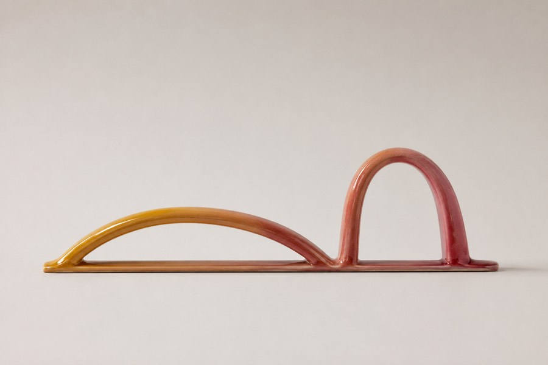

The mark is the product model: one long shallow beat (movement, about an hour) and one short tall one (a visual reset, about 25 minutes), standing on the same horizon the break surfaces draw. Not a leaf, an eye, a heart or a shield. It survives as a 16 pt monochrome template glyph, and it says the two things the app is actually about — two clocks, one baseline.
App icon 1024
64 / 32
Nothing due
Due — a dot, not a colour
Paused — dashed, reads in greyscale
Menu bar, template glyph
The system recolours these. State is carried by a dot and by dash, never by hue.
Assets — delivered, and what remains
1 · The mark as a real object — ✓ delivered

Glazed ceramic, warm gradient, exactly the two beats. Home: About panel, onboarding, marketing.
2 · Sky renders — ✓ dark pair delivered
Both dark skies are now live on the break artboards (movement graded from crimson toward coral in place). Still wanted: the light-appearance pair (same compositions at a brighter hour), and 2880×1800 masters — the current renders are 1536 px wide, soft at 2×.
3 · Nothing animated, please
Anything that loops, pulses or breathes is out — migraine and photosensitivity safety is a hard rule here. Stills only. The one moving thing in the product is the horizon line, and it moves once, slowly, in one direction.